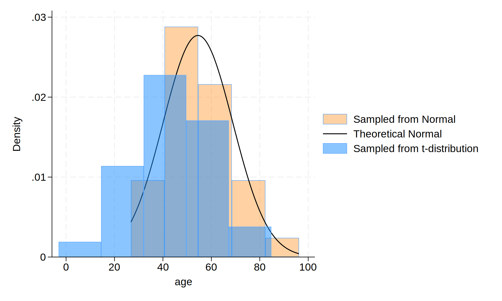

Methods: We initialized the dataset as 30 observations, and then simlutaed the variable of age using normal and t-distribution separately. The codes and graph are shown below.
. cls
.
. clear
.
. // initialize the dataset with 30 observations
. set obs 30
Number of observations (_N) was 0, now 30.
.
. // generate variable - normal distribution
. gen age = (rnormal() * 15 + 57)
.
. // generate variable - t distribution
. gen age_t = (rt(_N) * 15 + 47)
.
. // plot the histogram
. hist age, ///
> fcolor(orange%40) /// simulated normal
> addplot(hist age_t, fcolor(midblue%50)) /// simulated t-distribution
> normal /// theoretical normal
> legend(on ///
> lab(1 "Sampled from Normal") ///
> lab(2 "Theoretical Normal") ///
> lab(3 "Sampled from t-distribution") ///
> )
(bin=5, start=26.773829, width=13.882551)
.
. // export the histogram
. graph export hist_age.png, replace
file hist_age.png saved as PNG format

Notes: The distribution of the data follows a normal distribution that $ Age (years) \sim N(\mu = 57, \sigma^2 = 225) $. Based on the histogram, we can see that the normal distribution displays different format of t-distribution.